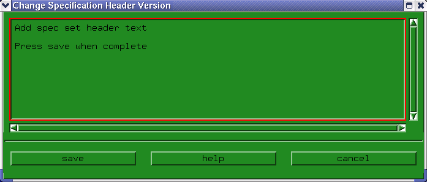

Changing the Header of the Specification Set
- Click Change Spec Set Header in the Edit pulldown menu.
A screen similar to that of the figure below appears.

- Edit the text in the edit field.
- Click save.
Functional changes
- Introduced before SmarTest 6.3.2